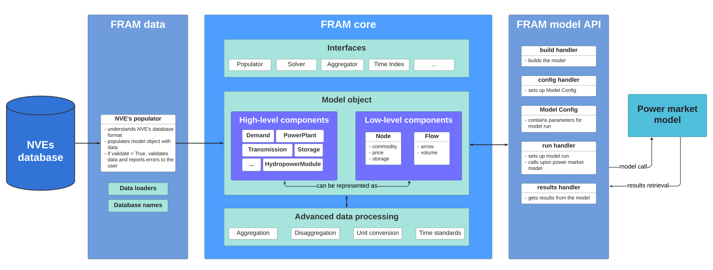

How FRAM works
The main component of FRAM is the core model in the FRAM core package, which creates a Python object Model() that holds the data from the database. The data in the Model object is transformed depending on what is required by the given power market model.
Data is imported from the database using a Populator class in the FRAM data package.
Data is sent to a power market model through the FRAM solver interface defined in FRAM core package. The current release has an implementation of a solver in FRAM JulES.
Architecture of FRAM

The Model object contains high-level components (Python objects) that hold the data about specific elements in the power system, for example power plants, demand, transmission etc. High-level components can be represented as low-level components - flows and nodes. For example, demand is a flow with an arrow towards a node, while production is a flow with an arrow away from a node.
Different kinds of nodes can be defined - emission nodes, power nodes, fuel nodes etc. In this way, the system supports modelling not only the power market, but also other adjacent markets - the heating market, emission market, gas market, etc.
Data in the core model can be easily manipulated - aggregated, disaggregated and converted, with respect to different units and time resolution, etc. This is how data can be staged for a given energy marked model run.
Through the solver interface, data is sent to the power market model, and results are sent back from the solved model to core model. Core model has fields for 'feeding in' results from different models. For example, a Node() object has a field where you can set the price from a solved model. Model results can then also be manipulated, through aggregation and disaggregation, etc., which simplifies comparison between models.
For more details about the core model, see FRAM core.
For more details about the database and data package, see FRAM data.
For more information about the JulES API, see FRAM JulES.